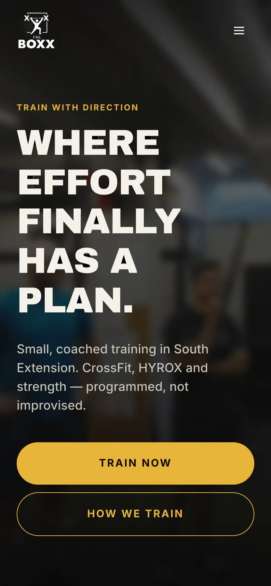
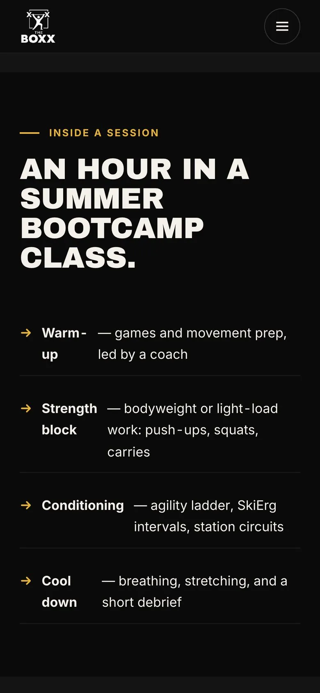
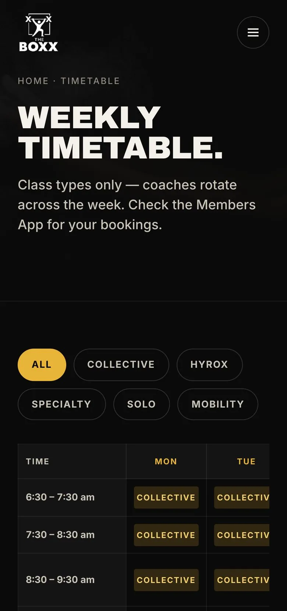
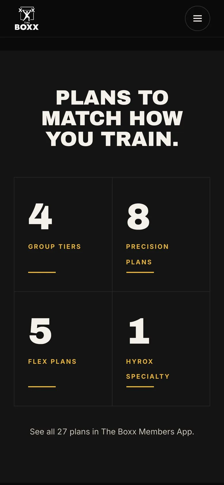

WorkCase study 05The Boxx · website rebuild
Make the studio feel as serious online as it is on the floor
A coached-training studio’s website, rebuilt and live in 19 working hours.
- Build
- 19 hfirst build file to relaunch, Apr 2026
- Members app
- 27plans set up with the vendor, Apr 2026
- Status
- Live at theboxx.in since the April 2026 relaunch · a coached-training studio in South Extension, New Delhi
- My part
- The rebuild, AI-assisted: requirements, product and design decisions, directing the AI coding tools, testing every change and the relaunch. Separately, choosing the studio’s membership software and setting it up.
Screens are from the live site, theboxx.in.




The live site on a phone
Six pieces, one job: get people training
The rebuild replaced the studio’s earlier site. The brief had three parts: explain the training, make joining easy, build for the phone. Here is one visitor’s path through the live site.
-
Home
One next step, everywhere
“Train now” sits in every page header and the phone menu. It opens the enquiry form for a free first session.
-
Phone menu
The next step at thumb height
On a phone the menu is a full-screen drawer: big links, and “Train now” where the thumb rests.
-
Train
Every hour has a shape
Collective, HYROX and the kids’ bootcamp each break a session into four steps, so a visitor sees the hour before anyone books.
-
Kids & Teens
Written for parents
The summer bootcamp hour, step by step: warm-up, strength, conditioning, cool-down.
-
HYROX
HYROX gets its own page
Running, stations, pacing and race prep, for people training for a race. It ends with when the HYROX Engine class runs.
-
Timetable
One week, filtered in one tap
The HYROX filter lights its slots and dims the rest. It lists class types, not coach names, so a rota change needs no edit.
-
Timetable, phone
Thumb-size chips
The chips wrap to two rows; the grid scrolls sideways instead of shrinking.
-
Memberships
Six plans, one action each
Each card says who it is for and ends in one button. Since 16 Oct 2026 the site shows “Call for pricing”.
Second role: the members app, 27 plans mapped from the old price sheet
Apart from the website, I chose the studio’s membership software, FitGymSoftware, and set it up with the vendor in April 2026, each plan with its sessions, validity and pricing. The site sells the first session; the app runs bookings and renewals, so the site carries no booking engine or payments.
- Old price sheet
- 27 plans in the members app
- 6 starting plans on the site
Hour 0 to hour 19
Every figure is dated. What is not claimed sits beside them and in the drawer.
Nineteen hours, on a clock
First build file to relaunch · April 2026
- RequirementsFormats, plans, timetable, voice
- Design directionDark, editorial, studio yellow
- BuildPages built with AI coding tools
- TestEvery change checked on desktop and phone
- RelaunchLive at theboxx.in
The five phases in the order they ran. The hours are not split by phase.
All the numbers (11)
- ~19 hfrom the first build file to the relaunched site, AI-assistedApr 2026
- 27membership plans in FitGymSoftware, chosen for the studio and set up with the vendor, each with its sessions, validity and pricingApr 2026 · in the members app
- Liveat theboxx.in since the April 2026 relaunchApr 2026
- 6starting plans on the Memberships page, one action each, with a pointer to all 27 in the members applive site
- 4 · 8 · 5 · 1plan counts on the home page: group tiers, Precision plans, Flex plans and a HYROX specialty, then “See all 27 plans”live site, on a phone
- 16 Octsince this date the studio’s site shows “Call for pricing” instead of prices16 Oct 2026
- 4numbered reasons on the home page answer “why here?” before any price or schedulelive site
- 3format cards on the home page: Collective group classes, HYROX and one-to-one Precision, each with its own next steplive site
- 4steps in an hour: Collective, HYROX and the kids’ bootcamp each break a session into fourlive site
- 5class-type filters on the weekly timetable (Collective, HYROX, Specialty, Solo, Mobility), plus Alllive site
- 1 + 1one stylesheet with design tokens and one vanilla JavaScript file; static HTML pages, no framework, and motion that switches off when the phone asks for reduced motionApr 2026 build
No traffic or sales figures are claimed for this site. Prices aren’t on it either: since 16 Oct 2026 the studio’s site shows “Call for pricing”. Most changes skip the website: plans beyond the six change in the members app, specialty blocks are announced in the app, the timetable shows class types rather than coaches, the Instagram feed (Behold) shows new posts by itself and the enquiry form’s questions are edited in Google Forms. Counts marked “live site” are read from the screens on this page.
Try its public cousin
The Boxx is a studio site with one job. Forge is a club site I built in the open: what I build for a club with a bigger brief.
Forge: strength and HYROX on two floors
Live spots on the timetable, a members’ app and a front desk, in a version you can open now.
- A HYROX page
- A weekly timetable
- Membership plans
- A free first session
How it was built
I made the product and design calls and directed AI coding tools. Separately, I chose and set up the studio’s membership software.
- HTML5
- CSS design tokens
- Vanilla JavaScript
- IntersectionObserver
- Archivo Black + Inter
- No framework
- FitGymSoftware
- AI coding tools
- RequirementsFormats, plans, timetable and voice, from the studio.
- Design directionDark, editorial, studio yellow.
- BuildPages built with AI coding tools under my direction: one stylesheet, one script.
- TestEvery change checked on desktop and phone.
- RelaunchLive at theboxx.in in April 2026, with 27 plans in the members app.